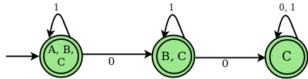

Program to Implement NFA with epsilon move to DFA Conversion
Non-deterministic Finite Automata (NFA) : NFA is a finite automaton in which, w
hen a single input symbol is provided to a single state, the machine proceeds to more than one state, i.e.
some of the moves cannot be uniquely defined by the current state and the current input symbol.
An NFA can be represented as M = { Q, ∑, ∂, q0, F}
Q → Finite non-empty set of states. ∑ → Finite non-empty set of input symbols. ∂ → Transitional Function. q0 → Beginning state. F → Final State
NFA with (null) or ∈ move :NFA is a finite automaton in which some moves cannot
be uniquely determined by the current state and the current input symbol when a single input is supplied to a single state.
Example :Consider the following figure of NFA with ∈ move :

Transition state table for the above NFA
| STATES |
0 |
1 |
epsilon |
| A |
B |
A |
B |
|
C |
|
|
| B |
- |
B |
C |
|
| C |
C |
C |
- |
Epsilon (∈) – closure : For a given state X, the epsilon closure is a set of states that can be reached from the state X with only (null) or movements, including the state X itself. In other words, -closure for a state can be achieved by performing a recursive union operation on the -closure of the states that can be reached from X with a single move.
The following are the closures for the preceding example:
∈ closure(A) : {A, B, C}
∈ closure(B) : {B, C}
∈ closure(C) : {C}
Deterministic Finite Automata (DFA) : DFA is a finite automaton in which, in all circumstances,
when a single input symbol is provided to a single state, the machine moves to that state, i.e., all of the machine's moves can be uniquely defined by
the current state and the current input symbol.
Steps to Convert NFA with ε-move to DFA :
Step 1 :Take ∈ closure for the beginning state of NFA as beginning state of DFA.Step 2 :Find the states that can be traversed from the present for each input symbol (union of transition value
and their closures for each states of NFA present in current state of DFA).
Step 3 : If any new state is found take it as current state and repeat step 2.
Step 4 : Do repeat Step 2 and Step 3 until no new state present in DFA transition table.
Step 5 : Mark the states of DFA which contains final state of NFA as final states of DFA.
Transition State Table for DFA corresponding to above NFA
| STATES |
0 |
1 |
| A, B, C |
B |
A, B, |
|
C |
C |
| B, C |
C |
B, C |
| C |
C |
C |
DFA STATE DIAGRAM

Examples :
Input :
6
2
,
FC - BF
- C -
- - D
E A -
A - BF
- - -
Output :
STATES OF NFA : A, B, C, D, E, F,
GIVEN SYMBOLS FOR NFA: 0, 1, eps
NFA STATE TRANSITION TABLE
STATES |0 |1 eps
--------+------------------------------------
A |FC |- |BF
B |- |C |-
C |- |- |D
D |E |A |-
E |A |- |BF
F |- |- |-
e-Closure (A) : ABF
e-Closure (B) : B
e-Closure (C) : CD
e-Closure (D) : D
e-Closure (E) : BEF
e-Closure (F) : F
********************************************************
DFA TRANSITION STATE TABLE
STATES OF DFA : ABF, CDF, CD, BEF,
GIVEN SYMBOLS FOR DFA: 0, 1,
STATES |0 |1
--------+-----------------------
ABF |CDF |CD
CDF |BEF |ABF
CD |BEF |ABF
BEF |ABF |CD
Input :
9
2
- - BH
- - CE
D - -
- - G
- F -
- - G
- - BH
I - -
- - -
Output :
STATES OF NFA : A, B, C, D, E, F, G, H, I,
GIVEN SYMBOLS FOR NFA: 0, 1, eps
NFA STATE TRANSITION TABLE
STATES |0 |1 eps
--------+------------------------------------
A |- |- |BH
H |I |- |-
I |- |- |-
e-Closure (A) : ABCEH
e-Closure (B) : BCE
e-Closure (C) : C
e-Closure (D) : BCDEGH
e-Closure (E) : E
e-Closure (F) : BCEFGH
e-Closure (G) : BCEGH
e-Closure (H) : H
e-Closure (I) : I
********************************************************
DFA TRANSITION STATE TABLE
STATES OF DFA : ABCEH, BCDEGHI, BCEFGH,
GIVEN SYMBOLS FOR DFA: 0, 1,
STATES |0 |1
--------+-----------------------
ABCEH |BCDEGHI |BCEFGH
BCDEGHI |BCDEGHI |BCEFGH
BCEFGH |BCDEGHI |BCEFGH
Explanation :First line of the input contains the number of states (N) of NFA. Second line of the input says the number of input symbols (S). In example1 number of states of NFA is 6 i.e.( A, B, C, D, E, F) and 2 input symbols i.e. ( 0, 1). Since we are working on NFA with ∈ move, ∈ will be added as an extra input symbol. The next N lines contains the transition values for every state of NFA. The value of ith row, jth column indicates transition value for ith state on jth input symbol. Here in example1 transition(A, 0) : FC. Output contains the NFA, ∈ closure for every states of the corresponding NFA and DFA obtained by converting the input NFA.
// C Program to illustrate how to convert e-nfa to DFA
#include
#include
#include
#define MAX_LEN 100
char NFA_FILE[MAX_LEN];
char buffer[MAX_LEN];
int zz = 0;
// Structure to store DFA states and their
// status ( i.e new entry or already present)
struct DFA {
char *states;
int count;
} dfa;
int last_index = 0;
FILE *fp;
int symbols;
/* reset the hash map*/
void reset(int ar[], int size) {
int i;
// reset all the values of
// the mapping array to zero
for (i = 0; i < size; i++) {
ar[i] = 0;
}
}
// Check which States are present in the e-closure
/* map the states of NFA to a hash set*/
void check(int ar[], char S[]) {
int i, j;
// To parse the individual states of NFA
int len = strlen(S);
for (i = 0; i < len; i++) {
// Set hash map for the position
// of the states which is found
j = ((int)(S[i]) - 65);
ar[j]++;
}
}
// To find new Closure States
void state(int ar[], int size, char S[]) {
int j, k = 0;
// Combine multiple states of NFA
// to create new states of DFA
for (j = 0; j < size; j++) {
if (ar[j] != 0)
S[k++] = (char)(65 + j);
}
// mark the end of the state
S[k] = '\0';
}
// To pick the next closure from closure set
int closure(int ar[], int size) {
int i;
// check new closure is present or not
for (i = 0; i < size; i++) {
if (ar[i] == 1)
return i;
}
return (100);
}
// Check new DFA states can be
// entered in DFA table or not
int indexing(struct DFA *dfa) {
int i;
for (i = 0; i < last_index; i++) {
if (dfa[i].count == 0)
return 1;
}
return -1;
}
/* To Display epsilon closure*/
void Display_closure(int states, int closure_ar[],
char *closure_table[],
char *NFA_TABLE[][symbols + 1],
char *DFA_TABLE[][symbols]) {
int i;
for (i = 0; i < states; i++) {
reset(closure_ar, states);
closure_ar[i] = 2;
// to neglect blank entry
if (strcmp(&NFA_TABLE[i][symbols], "-") != 0) {
// copy the NFA transition state to buffer
strcpy(buffer, &NFA_TABLE[i][symbols]);
check(closure_ar, buffer);
int z = closure(closure_ar, states);
// till closure get completely saturated
while (z != 100)
{
if (strcmp(&NFA_TABLE[z][symbols], "-") != 0) {
strcpy(buffer, &NFA_TABLE[z][symbols]);
// call the check function
check(closure_ar, buffer);
}
closure_ar[z]++;
z = closure(closure_ar, states);
}
}
// print the e closure for every states of NFA
printf("\n e-Closure (%c) :\t", (char)(65 + i));
bzero((void *)buffer, MAX_LEN);
state(closure_ar, states, buffer);
strcpy(&closure_table[i], buffer);
printf("%s\n", &closure_table[i]);
}
}
/* To check New States in DFA */
int new_states(struct DFA *dfa, char S[]) {
int i;
// To check the current state is already
// being used as a DFA state or not in
// DFA transition table
for (i = 0; i < last_index; i++) {
if (strcmp(&dfa[i].states, S) == 0)
return 0;
}
// push the new
strcpy(&dfa[last_index++].states, S);
// set the count for new states entered
// to zero
dfa[last_index - 1].count = 0;
return 1;
}
// Transition function from NFA to DFA
// (generally union of closure operation )
void trans(char S[], int M, char *clsr_t[], int st,
char *NFT[][symbols + 1], char TB[]) {
int len = strlen(S);
int i, j, k, g;
int arr[st];
int sz;
reset(arr, st);
char temp[MAX_LEN], temp2[MAX_LEN];
char *buff;
// Transition function from NFA to DFA
for (i = 0; i < len; i++) {
j = ((int)(S[i] - 65));
strcpy(temp, &NFT[j][M]);
if (strcmp(temp, "-") != 0) {
sz = strlen(temp);
g = 0;
while (g < sz) {
k = ((int)(temp[g] - 65));
strcpy(temp2, &clsr_t[k]);
check(arr, temp2);
g++;
}
}
}
bzero((void *)temp, MAX_LEN);
state(arr, st, temp);
if (temp[0] != '\0') {
strcpy(TB, temp);
} else
strcpy(TB, "-");
}
/* Display DFA transition state table*/
void Display_DFA(int last_index, struct DFA *dfa_states,
char *DFA_TABLE[][symbols]) {
int i, j;
printf("\n\n********************************************************\n\n");
printf("\t\t DFA TRANSITION STATE TABLE \t\t \n\n");
printf("\n STATES OF DFA :\t\t");
for (i = 1; i < last_index; i++)
printf("%s, ", &dfa_states[i].states);
printf("\n");
printf("\n GIVEN SYMBOLS FOR DFA: \t");
for (i = 0; i < symbols; i++)
printf("%d, ", i);
printf("\n\n");
printf("STATES\t");
for (i = 0; i < symbols; i++)
printf("|%d\t", i);
printf("\n");
// display the DFA transition state table
printf("--------+-----------------------\n");
for (i = 0; i < zz; i++) {
printf("%s\t", &dfa_states[i + 1].states);
for (j = 0; j < symbols; j++) {
printf("|%s \t", &DFA_TABLE[i][j]);
}
printf("\n");
}
}
// Driver Code
int main() {
int i, j, states;
char T_buf[MAX_LEN];
// creating an array dfa structures
struct DFA *dfa_states = malloc(MAX_LEN * (sizeof(dfa)));
states = 6, symbols = 2;
printf("\n STATES OF NFA :\t\t");
for (i = 0; i < states; i++)
printf("%c, ", (char)(65 + i));
printf("\n");
printf("\n GIVEN SYMBOLS FOR NFA: \t");
for (i = 0; i < symbols; i++)
printf("%d, ", i);
printf("eps");
printf("\n\n");
char *NFA_TABLE[states][symbols + 1];
// Hard coded input for NFA table
char *DFA_TABLE[MAX_LEN][symbols];
strcpy(&NFA_TABLE[0][0], "FC");
strcpy(&NFA_TABLE[0][1], "-");
strcpy(&NFA_TABLE[0][2], "BF");
strcpy(&NFA_TABLE[1][0], "-");
strcpy(&NFA_TABLE[1][1], "C");
strcpy(&NFA_TABLE[1][2], "-");
strcpy(&NFA_TABLE[2][0], "-");
strcpy(&NFA_TABLE[2][1], "-");
strcpy(&NFA_TABLE[2][2], "D");
strcpy(&NFA_TABLE[3][0], "E");
strcpy(&NFA_TABLE[3][1], "A");
strcpy(&NFA_TABLE[3][2], "-");
strcpy(&NFA_TABLE[4][0], "A");
strcpy(&NFA_TABLE[4][1], "-");
strcpy(&NFA_TABLE[4][2], "BF");
strcpy(&NFA_TABLE[5][0], "-");
strcpy(&NFA_TABLE[5][1], "-");
strcpy(&NFA_TABLE[5][2], "-");
printf("\n NFA STATE TRANSITION TABLE \n\n\n");
printf("STATES\t");
for (i = 0; i < symbols; i++)
printf("|%d\t", i);
printf("eps\n");
// Displaying the matrix of NFA transition table
printf("--------+------------------------------------\n");
for (i = 0; i < states; i++) {
printf("%c\t", (char)(65 + i));
for (j = 0; j <= symbols; j++) {
printf("|%s \t", &NFA_TABLE[i][j]);
}
printf("\n");
}
int closure_ar[states];
char *closure_table[states];
Display_closure(states, closure_ar, closure_table, NFA_TABLE, DFA_TABLE);
strcpy(&dfa_states[last_index++].states, "-");
dfa_states[last_index - 1].count = 1;
bzero((void *)buffer, MAX_LEN);
strcpy(buffer, &closure_table[0]);
strcpy(&dfa_states[last_index++].states, buffer);
int Sm = 1, ind = 1;
int start_index = 1;
// Filling up the DFA table with transition values
// Till new states can be entered in DFA table
while (ind != -1) {
dfa_states[start_index].count = 1;
Sm = 0;
for (i = 0; i < symbols; i++) {
trans(buffer, i, closure_table, states, NFA_TABLE, T_buf);
// storing the new DFA state in buffer
strcpy(&DFA_TABLE[zz][i], T_buf);
// parameter to control new states
Sm = Sm + new_states(dfa_states, T_buf);
}
ind = indexing(dfa_states);
if (ind != -1)
strcpy(buffer, &dfa_states[++start_index].states);
zz++;
}
// display the DFA TABLE
Display_DFA(last_index, dfa_states, DFA_TABLE);
return 0;
}
Use of NFA with ∈ move : If we wish to build an FA that accepts a language, it can be difficult or even impossible to build a direct NFA or DFA. However, if NFA with movements is utilized, the transitional diagram can be simply produced and presented.